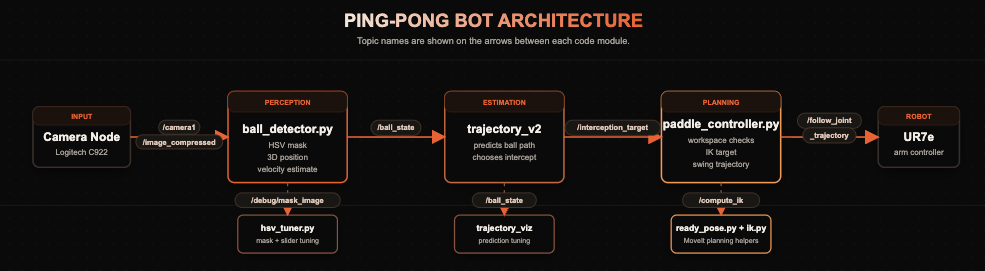
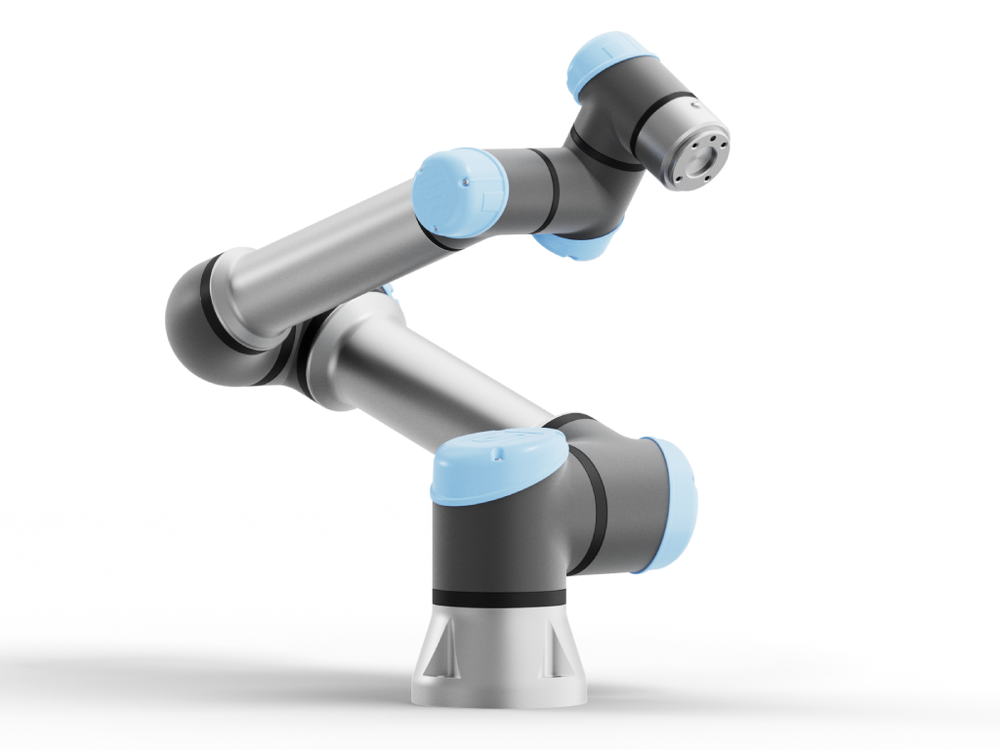
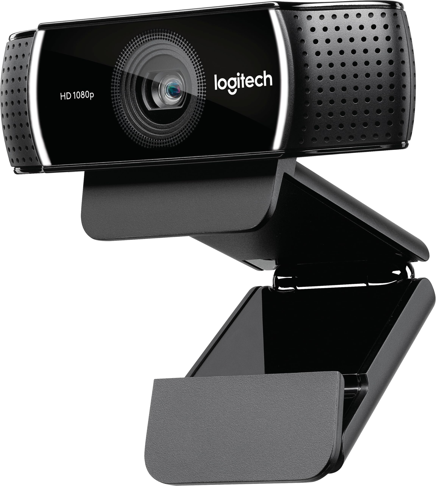

01
Introduction
End goal
When tossed a ball, the UR-7e, with a ping-pong paddle in hand, should be able to move to the correct position to intercept it in real time.
Why this is interesting
Hitting a relatively small object, at high speeds, in real time, is pretty hard. The primary challenges we had are best described by the following series of questions, which we encountered and answered over the course of the project:
- How do you detect a fast-moving ball at all using the camera?
- Once you detect the ball, how can you accurately estimate the ball's position in 3D space, accounting for factors like motion blur?
- (Later on, the challenge proved to be in trying to workshop an approach to estimate depth without a depth sensor.)
- Once all of that's finally been ironed out, how can you ensure you have enough high-quality frames to be able to estimate a trajectory? How quickly does that need to happen?
- Since there is error inherent to all the steps before trajectory estimation, how can we mathematically correct for that in the way that we choose to estimate the trajectory? Can we "engineer our way" around the hardware?
- How can we change the way that we are estimating trajectories to account for the fact that we need time for the controller to move the paddle into a place where it can intercept the ball?
Real-world applications
The techniques used here transfer to applications of fast reactive control for example this is useful for autonomous robotics such as autonomous vehicals and safety system which has to quicky sense and react to a variety of fast chaning enviornmental applications.
02
Design
Design criteria & desired functionality
The core goal was a robot that could detect a ball being tossed, estimate where it was going, and move the arm there in time to intercept it. That breaks down into three concrete criteria:
- Reliable ball detection: The vision pipeline needs to find the ball consistently across enough frames to fit a trajectory. Too few detections and the estimate falls apart.
- Low enough end-to-end latency: Detection, trajectory estimation, IK, and arm movement all have to complete before the ball arrives. Every step in the pipeline eats into that budget.
- Interception accuracy: The arm has to actually end up at the right place. A good trajectory estimate is useless if the IK solution or the arm movement puts the paddle somewhere else.
Our stretch goal was a true return: paddle moving through the ball at contact so it comes back. We got to reliable interception but not to a true system that can rally a ball back.
The design we chose
[PLACEHOLDER: Describe the high-level architecture you settled on. A diagram is ideal here.]

Our project's general pipeline is as follows:
- Perception. We take raw camera input and apply a HSV filter to it in order to detect our green ping-pong ball. Once this is complete, we estimate its depth by comparing the size of the ball to its true known size, and can thus obtain (x,y,z) coordinates for where the ball is in the camera frame (and calculate rough (v_x, v_y, v_z) between frames). We publish these coordinates.
- Estimation. We take those coordinates that perception is publishing and use em to approximate the trajectory of the ping-pong ball! Mathematically this is very simple: we just use least squares quadratic fit on the z-axis and linear fit for the x and y axes (as per basic kinematics for projectile motion). Given this and a pre-decided "intercept plane" near the end-effector's tuck position, we find where our 3D inters
- Control. Once we've received an intercept point from the previous module, we compute the IK solution to move the UR7e from its current position to the desired location so that it can successfully hit the ball :)
Trade-offs
HSV over YOLO for ball detection
We considered using a YOLO model for ball detection but ruled it out due to latency. To estimate a trajectory, we need a high density of detections in a short window of time. CV models running on the lab's desktop GPUs would not give us the speed we needed.
Logitech C922 over Intel RealSense
We tried the Intel RealSense for its depth output, but it was limited to 30 fps in depth mode and produced noisy readings for a small, fast-moving ball. We switched to a Logitech C922 running at 1280x720 at 60 fps, trading built-in depth for framerate. Depth was then estimated in software using the known physical size of the ball and how many pixels it occupied in the HSV mask.
Camera positioning
Camera placement directly determines how many usable detections we get and how accurate each one is. Too far and the ball occupies too few pixels for reliable depth estimation. Too close and the trajectory is only partially visible. We settled on a position that consistently yields 23 to 27 detections across the first half of the ball's flight. The estimator commits after 17 points: enough to produce a stable fit, and early enough that the arm has time to reach the intercept point before the ball does.
Restricted workspace over collision-aware planning
Rather than running careful motion planning to avoid obstacles, we defined a restricted workspace and simply rejected any target outside it. This means the arm never tries to go somewhere unsafe, but without any of the planning overhead. Speed mattered more than graceful constraint handling here.
Reliability
[PLACEHOLDER]
03
Implementation
Hardware
We used a UR7e robotic arm, a Logitech C922 webcam, and a camera tripod to implement our ping-pong bot design. The webcam was mounted on our tripod to record video frames in order to detect and record the trajectory of the ball as it traveled across video frames. Once the trajectory of the ball was estimated and the interception target was found the UR7e was used to intercept the ball using a ping-pong paddle held in the end effector.


Parts list
| Component | Spec / Model | Purpose |
|---|---|---|
| Robot arm | Universal Robots UR7e | Primary manipulator |
| [Camera] | [Model] | [Ball tracking] |
| [Paddle / mount] | [Custom CAD] | [End-effector] |
| [Compute] | [Model] | [Vision / control] |
| [Add rows as needed] |
Software
[PLACEHOLDER: Describe each major software component — perception pipeline, trajectory planner, controller, ROS 2 nodes, simulation. Mention launch files, URDFs, and how they interconnect.]
Ball detection
- HSV filtering: We convert each frame to HSV color space and threshold it to isolate the green ping pong ball, then grab the largest blob and check how circular it is, throwing out anything that looks more like background clutter or bad detections.
- Depth from known radius: Depth comes entirely from how big the ball looks in the frame. Since we know the physical size of a ping pong ball, we can use the pinhole camera model to back out how far away it is. The tricky part is that motion blur stretches the ball's outline along the direction it's moving, which makes the apparent radius look bigger than it really is and throws off the depth estimate. We fixed this by computing the radius from the contour area instead of the contour boundary, which turns out to be much more stable.
- Hardware tuning: The biggest improvements to perception had nothing to do with the algorithm. Just turning down the camera exposure made an enormous difference. At lower exposure the ball stays sharp even when it's moving fast, which means cleaner outlines, better radius estimates, and more accurate depth. We also spent a lot of time tuning resolution and framerate, and landed on 720p at 60fps as the sweet spot for our setup. For our project getting the hardware right was by far the hardest part, and this meant we spent a lot of time on perception.
Trajectory estimator
As the perception module continuously publishes BallState messages, the trajectory estimator module takes in these observations until it hits the minimum number of observations (we settled at around 17 total points, though we were initially working with 8-12 because we overestimated the time our controller would take).
- Collecting observations: We collect observations of the ball's 3D position and velocity, filtering out points that are moving too slowly (less than the MIN_SPEED parameter) and resetting if it's been too long since we've seen the ball, until we have reached the desired number of observations.
- Fit a parabola through these observations: We tried a LOT of different methods, mostly centering around a simple np.polyfit for each axis. We initially had an issue where sometimes gravity wouldn't point down, but that turned out to be an error in how we'd passed the data into polyfit.
Once we had that sorted, we still had errors with the trajectory being an UPWARD-opening parabola (!!) because of enough missing points and observations solely in the upward part of the trajectory. We ended up forcing the first coefficient to be -4.9, and instead of fitting all 3 coefficients in ax^2 + bx + c, we subtract at^2 from every point (because we have a timestamp array and W np elementwise operations!!) and just linearly fit the remaining bx + c part of the quadratic on the z-axis. - Intercept point: After we've computed the 3D parabola parametrized by t (x and y linear, z quadratic), we compute where that 3D parabola intersects our preset "hit plane", and publish this as the intercept point that we want our controller to move to.
Paddle controller
Once an interception target is computed, the paddle controller takes over:
- Inverse kinematics: Joint angles are solved using the IK solver (from the lab we did!). Given the target Cartesian pose, it returns the required joint configuration.
- No motion planning: To minimize latency, we skip motion planning entirely and send joint targets directly to the robot.
- Direct trajectory dispatch: The joint target is sent straight to the UR7e's
scaled_joint_trajectory_controllervia a FollowJointTrajectory action. - Time parameterization: The UR7e executes a move by following a trajectory with a fixed end time. We compute the shortest time that is physically achievable by modeling each joint with either a triangular or trapezoidal velocity profile, based on the rated joint speed and acceleration limits. The slowest joint sets the overall duration, and that value gets passed as the
time_from_startin the trajectory point.
How the complete system works
- [Step 0 - Setup]: Start by making sure you've plugged in the camera, distrobox entered ros2, colcon built, etc.
- [Step 1 — Perception]: Launch the usb_cam custom.launch.py that contains our custom exposure settings
- [Step 2 — Prediction]: Launch perception.launch.py, which will run our ball_detector node and should start publishing BallStates. If you want to see our super awesome tool we used for HSV tuning and looking at the 3D position of the ball we were computing from the image, run debug_perception.launch.py too!
- [Step 3 — Estimation]: Launch estimation.launch.py, which will run our trajectory_estimator node. Also run debug_estimation.launch.py as that will allow you to visualize the hit plane, points detected and used in the trajectory, and the trajectory itself in Rviz.
- [Step 3 — Planning and control]: Now, once you've done some toggle grippering and run the command to get the bot into ready pose, run planning.launch.py and keep your hand on the E-stop!! Start throwing balls and see what happens :)
04
Results
What it did
The system successfully detects a green stress ball being tossed in front of the robot, estimates where the ball is heading, and moves the arm to the predicted interception point in time to block it. The full pipeline runs in real time: HSV detection feeds into trajectory estimation, which publishes an interception target, and the arm moves there.
Video
Project demo video.
Gallery
05
Conclusion
Discussion
The finished system came reasonably close to our design goals. The robot can estimate a ball trajectory and move the arm to the predicted interception point. Reliability, though, is a different story. Depth estimation from camera area calculations is inherently noisy, and that noise propagates through to the trajectory estimate. We switched from a standard ping-pong ball to a larger stress ball roughly twice the size, which gave the HSV mask more pixels to work with and meaningfully improved consistency. At our best, we hit three balls in a row, and two in a row was fairly common. But shot-to-shot variance remained high, mostly tracing back to the camera.
Difficulties
The biggest surprise was how poorly the Intel RealSense performed for this use case. We expected noisy depth readings, but not to the degree we saw. It couldn't acquire enough points in the short window before the ball left the frame, motion blur added additional error, and the 30 fps cap in depth mode made the problem worse. We spent a lot of time here before switching to area-based depth estimation with the Logitech camera. Once we moved past perception, things went fairly smoothly. The controller worked well, and trajectory estimation was reasonable once the depth signal improved.
Flaws, hacks, and future work
The biggest shortcut in the current implementation is that the robot is a blocker, not a hitter. It moves to the interception point and stops there, so the ball bounces off a stationary paddle. A real ping-pong shot requires the paddle to be moving through the ball at contact so it actually returns with speed. To do that properly, the robot would need to start from a further-back ready position and swing through an interception plane rather than just parking at one. We ran out of time to get there, but that is the clearest path to a system that can actually rally.
07
Additional materials
Source code
Full project repository — perception, planning, control, ROS 2 packages.
CAD models
Paddle mount, fixtures, and any custom 3D-printed parts.
URDF & launch files
Robot description and ROS 2 launch configurations.
Datasheets
Spec sheets for the camera, robot, and any other off-the-shelf components.
Additional videos
Bloopers, debugging clips, alternate runs, and longer demos.
Data & logs
Trajectories, training curves, and evaluation runs.